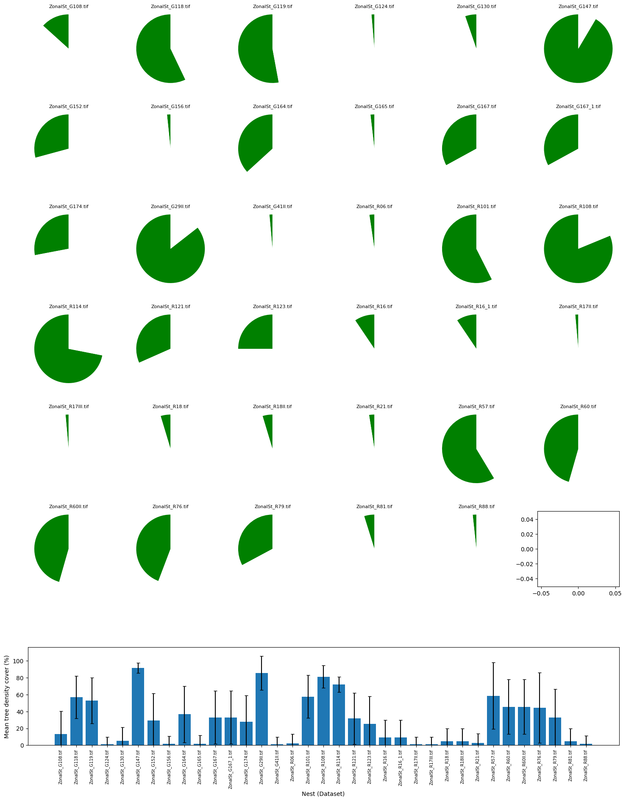
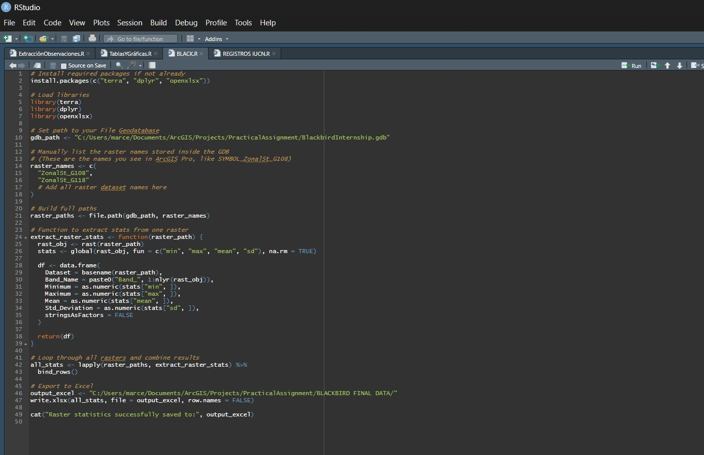
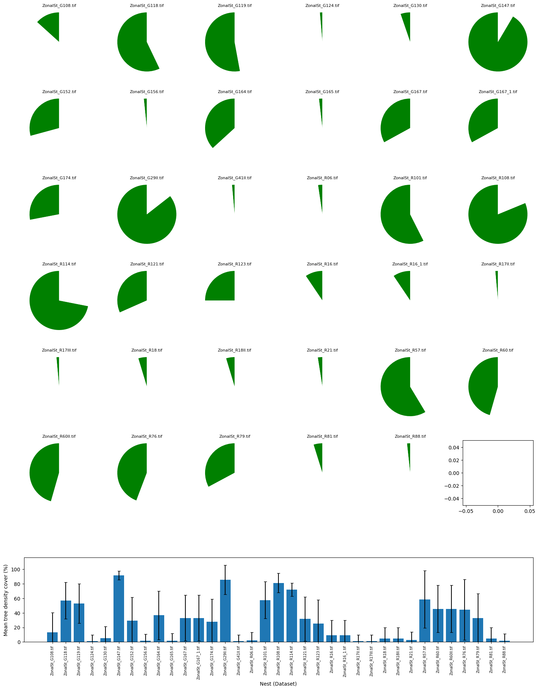
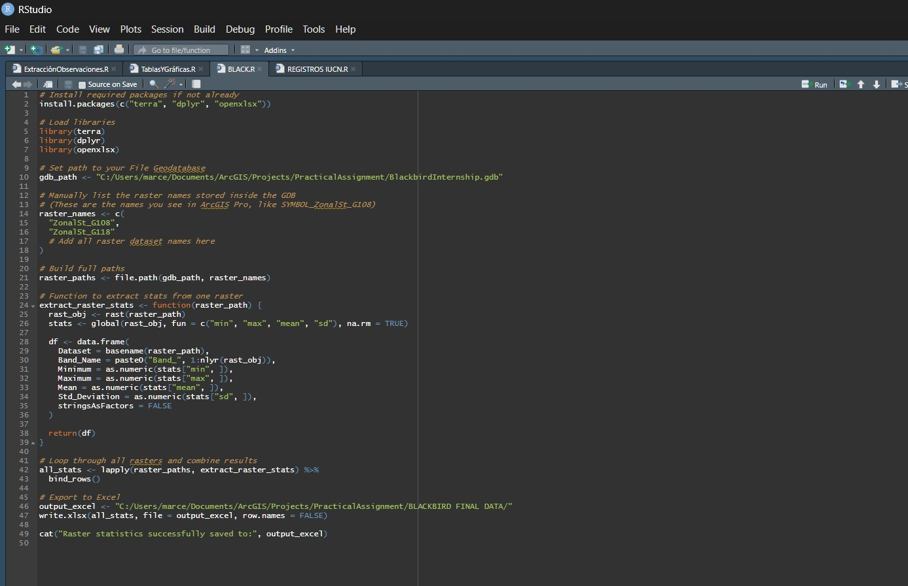
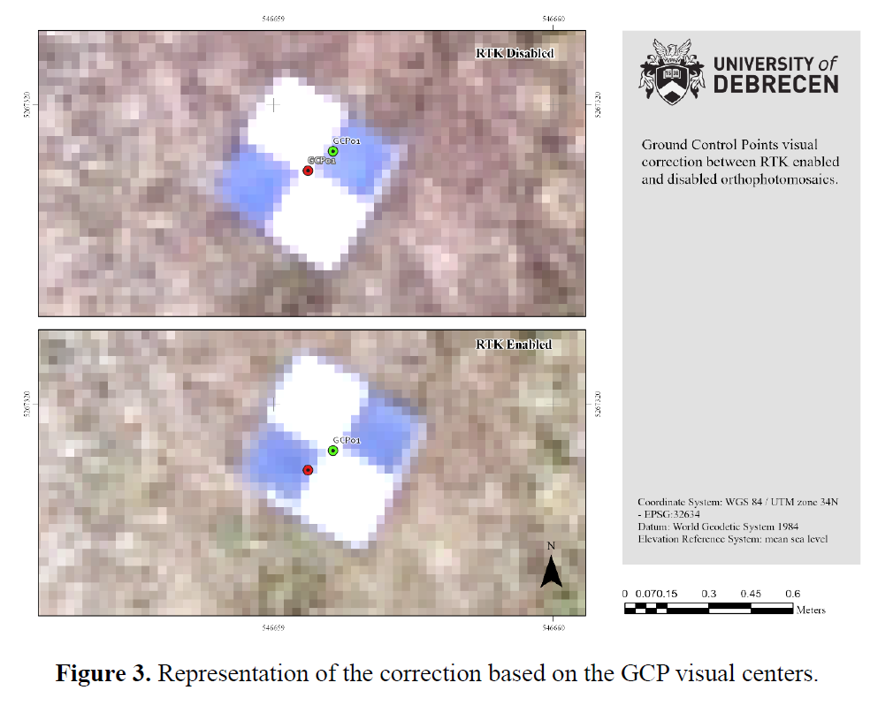
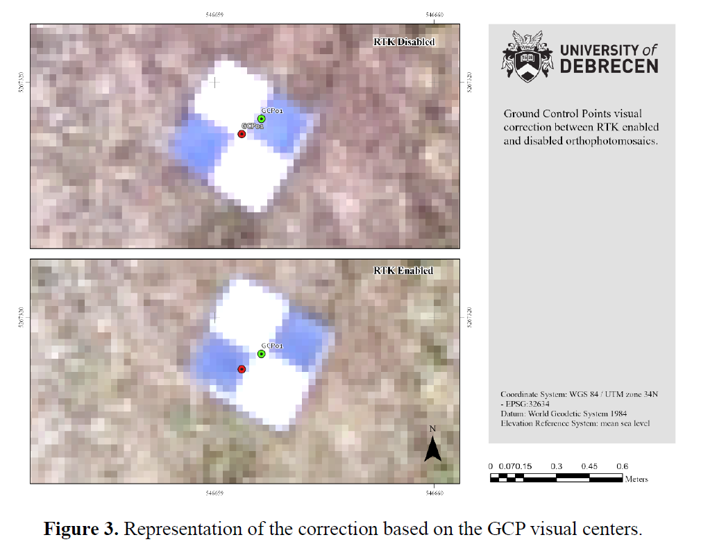

 



Drone Photogrammetry for Environmental Compensation
Designed and managed the first drone-based photogrammetry analyses of the consulting firm to monitor forest cover, soil recovery, and ecological restoration in environmental compensation projects repurposing drone equipment.
- Captured and processed UAV imagery to generate DSMs and orthomosaics for site assessments.
- Implemented ArcGIS Pro ModelBuilder workflows with Python and R integrations for real-time updates.
- Ensured QA/QC of spatial datasets and alignment with regulatory standards.